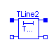
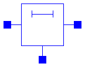
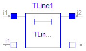
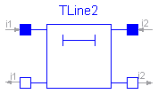
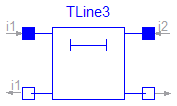

This package contains lossy and lossless segmented transmission lines, and LC distributed line models.

Lossy Transmission Line. The lossy transmission line OLine consists of segments of lumped resistances and inductances in series and conductances and capacitances that are connected with the reference pin p3. The precision of the model depends on the number N of lumped segments.
| Name | Default | Description |
|---|---|---|
| r | 1 | Resistance per meter [Ohm/m] |
| l | 1 | Inductance per meter [H/m] |
| g | 1 | Conductance per meter [Siemens/m] |
| c | 1 | Capacitance per meter [F/m] |
| length | 1 | Length of line [m] |
| N | 1 | Number of lumped segments |
model OLine "Lossy Transmission Line"
//extends Interfaces.ThreePol;
Interfaces.Pin p1;
Interfaces.Pin p2;
Interfaces.Pin p3;
SI.Voltage v13;
SI.Voltage v23;
SI.Current i1;
SI.Current i2;
parameter Real r(
final min=Modelica.Constants.small,
unit="Ohm/m") = 1 "Resistance per meter";
parameter Real l(
final min=Modelica.Constants.small,
unit="H/m") = 1 "Inductance per meter";
parameter Real g(
final min=Modelica.Constants.small,
unit="Siemens/m") = 1 "Conductance per meter";
parameter Real c(
final min=Modelica.Constants.small,
unit="F/m") = 1 "Capacitance per meter";
parameter SI.Length length(final min=Modelica.Constants.small) = 1 "Length of line";
parameter Integer N(final min=1) = 1 "Number of lumped segments";
protected
Basic.Resistor R[N + 1](R=fill(r*length/(N + 1), N + 1));
Basic.Inductor L[N + 1](L=fill(l*length/(N + 1), N + 1));
Basic.Capacitor C[N](C=fill(c*length/(N), N));
Basic.Conductor G[N](G=fill(g*length/(N), N));
equation
v13 = p1.v - p3.v;
v23 = p2.v - p3.v;
i1 = p1.i;
i2 = p2.i;
connect(p1, R[1].p);
for i in 1:N loop
connect(R[i].n, L[i].p);
connect(L[i].n, C[i].p);
connect(L[i].n, G[i].p);
connect(C[i].n, p3);
connect(G[i].n, p3);
connect(L[i].n, R[i + 1].p);
end for;
connect(R[N + 1].n, L[N + 1].p);
connect(L[N + 1].n, p2);
end OLine;

The lossy RC line ULine consists of segments of lumped series resistances and capacitances that are connected with the reference pin p3. The precision of the model depends on the number N of lumped segments.
| Name | Default | Description |
|---|---|---|
| r | 1 | Resistance per meter [Ohm/m] |
| c | 1 | Capacitance per meter [F/m] |
| length | 1 | Length of line [m] |
| N | 1 | Number of lumped segments |
model ULine "Lossy RC Line"
//extends Interfaces.ThreePol;
Interfaces.Pin p1;
Interfaces.Pin p2;
Interfaces.Pin p3;
SI.Voltage v13;
SI.Voltage v23;
SI.Current i1;
SI.Current i2;
parameter Real r(
final min=Modelica.Constants.small,
unit="Ohm/m") = 1 "Resistance per meter";
parameter Real c(
final min=Modelica.Constants.small,
unit="F/m") = 1 "Capacitance per meter";
parameter SI.Length length(final min=Modelica.Constants.small) = 1 "Length of line";
parameter Integer N(final min=1) = 1 "Number of lumped segments";
protected
Basic.Resistor R[N + 1](R=fill(r*length/(N + 1), N + 1));
Basic.Capacitor C[N](C=fill(c*length/(N), N));
equation
v13 = p1.v - p3.v;
v23 = p2.v - p3.v;
i1 = p1.i;
i2 = p2.i;
connect(p1, R[1].p);
for i in 1:N loop
connect(R[i].n, R[i + 1].p);
end for;
for i in 1:N loop
connect(R[i].n, C[i].p);
end for;
for i in 1:N loop
connect(C[i].n, p3);
end for;
connect(R[N + 1].n, p2);
end ULine;
Modelica.Electrical.Analog.Lines.TLine1
Lossless transmission line with characteristic impedance Z0 and transmission delay TD The lossless transmission line TLine1 is a two Port. Both port branches consist of a resistor with characteristic impedance Z0 and a controled voltage source that takes into consideration the transmission delay TD. For further details see Branin's article. The model parameters can be derived from inductance and capacitance per length (L' resp. C'), i. e. Z0 = sqrt(L'/C') and TD = sqrt(L'*C')*length_of_line. Resistance R' and conductance C' per meter are assumed to be zero. References: Branin Jr., F. H.: Transient Analysis of Lossless Transmission Lines. Proceedings of the IEEE 55(1967), 2012 - 2013 Hoefer, E. E. E.; Nielinger, H.: SPICE : Analyseprogramm fuer elektronische Schaltungen. Springer-Verlag, Berlin, Heidelberg, New York, Tokyo, 1985.
| Name | Default | Description |
|---|---|---|
| Z0 | 1 | Characteristic impedance [Ohm] |
| TD | 1 | Transmission delay [s] |
model TLine1 "Lossless transmission line with characteristic impedance Z0 and transmission delay TD" extends Modelica.Electrical.Analog.Interfaces.TwoPort; parameter Modelica.SIunits.Resistance Z0=1 "Characteristic impedance"; parameter Modelica.SIunits.Time TD=1 "Transmission delay"; protected Modelica.SIunits.Voltage er; Modelica.SIunits.Voltage es; equation assert(Z0 > 0, "Z0 has to be positive"); assert(TD > 0, "TD has to be positive"); i1 = (v1 - es)/Z0; i2 = (v2 - er)/Z0; es = 2*delay(v2, TD) - delay(er, TD); er = 2*delay(v1, TD) - delay(es, TD); end TLine1;

Lossless transmission line with characteristic impedance Z0, frequency F and normalized length NL The lossless transmission line TLine2 is a two Port. Both port branches consist of a resistor with the value of the characteristic impedance Z0 and a controled voltage source that takes into consideration the transmission delay. For further details see Branin's article. Resistance R' and conductance C' per meter are assumed to be zero. The characteristic impedance Z0 can be derived from inductance and capacitance per length (L' resp. C'), i. e. Z0 = sqrt(L'/C'). The normalized length NL is equal to the length of the line divided by the wavelength corresponding to the frequency F, i. e. the transmission delay TD is the quotient of NL and F. References: Branin Jr., F. H.: Transient Analysis of Lossless Transmission Lines. Proceedings of the IEEE 55(1967), 2012 - 2013 Hoefer, E. E. E.; Nielinger, H.: SPICE : Analyseprogramm fuer elektronische Schaltungen. Springer-Verlag, Berlin, Heidelberg, New York, Tokyo, 1985.
| Name | Default | Description |
|---|---|---|
| Z0 | 1 | Characteristic impedance [Ohm] |
| F | 1 | Frequency [Hz] |
| NL | 1 | Normalized length [m] |
model TLine2 "Lossless transmission line with characteristic impedance Z0, frequency F and normalized length NL" extends Modelica.Electrical.Analog.Interfaces.TwoPort; parameter Modelica.SIunits.Resistance Z0=1 "Characteristic impedance"; parameter Modelica.SIunits.Frequency F=1 "Frequency"; parameter Modelica.SIunits.Length NL=1 "Normalized length"; protected Modelica.SIunits.Voltage er; Modelica.SIunits.Voltage es; Modelica.SIunits.Time TD; equation assert(Z0 > 0, "Z0 has to be positive"); assert(NL > 0, "NL has to be positive"); assert(F > 0, "F has to be positive"); TD = NL/F; i1 = (v1 - es)/Z0; i2 = (v2 - er)/Z0; es = 2*delay(v2, TD) - delay(er, TD); er = 2*delay(v1, TD) - delay(es, TD); end TLine2;
Modelica.Electrical.Analog.Lines.TLine3
Lossless transmission line with characteristic impedance Z0 and frequency F
The lossless transmission line TLine3 is a two Port. Both port branches
consist of a resistor with value of the characteristic impedance Z0
and a controled voltage source that takes into consideration
the transmission delay.
For further details see Branin's article.
Resistance R' and conductance C' per meter are assumed to be zero.
The characteristic impedance Z0 can be derived from inductance and
capacitance per length (L' resp. C'), i. e. Z0 = sqrt(L'/C').
The length of the line is equal to a quarter of the wavelength
corresponding to the frequency F, i. e. the
transmission delay is the quotient of 4 and F.
In this case, the caracteristic impedance is called natural impedance.
References:
Branin Jr., F. H.: Transient Analysis of Lossless Transmission Lines.
Proceedings of the IEEE 55(1967), 2012 - 2013
Hoefer, E. E. E.; Nielinger, H.: SPICE : Analyseprogramm fuer elektronische
Schaltungen. Springer-Verlag, Berlin, Heidelberg, New York, Tokyo, 1985.
| Name | Default | Description |
|---|---|---|
| Z0 | 1 | Natural impedance [Ohm] |
| F | 1 | Frequency [Hz] |
model TLine3 "Lossless transmission line with characteristic impedance Z0 and frequency F" extends Modelica.Electrical.Analog.Interfaces.TwoPort; parameter Modelica.SIunits.Resistance Z0=1 "Natural impedance"; parameter Modelica.SIunits.Frequency F=1 "Frequency"; protected Modelica.SIunits.Voltage er; Modelica.SIunits.Voltage es; Modelica.SIunits.Time TD; equation assert(Z0 > 0, "Z0 has to be positive"); assert(F > 0, "F has to be positive"); TD = 1/F/4; i1 = (v1 - es)/Z0; i2 = (v2 - er)/Z0; es = 2*delay(v2, TD) - delay(er, TD); er = 2*delay(v1, TD) - delay(es, TD); end TLine3;